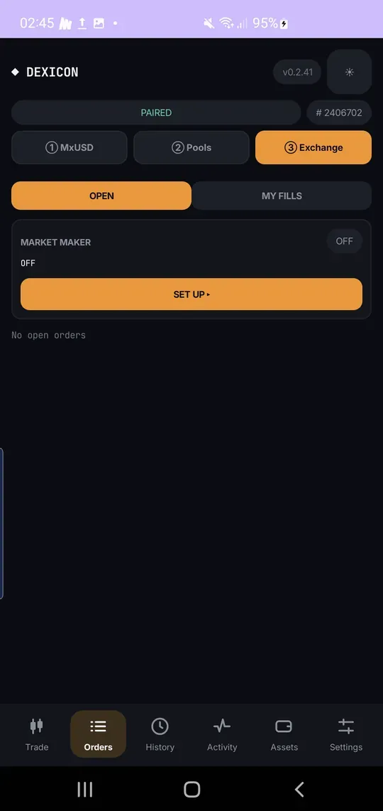
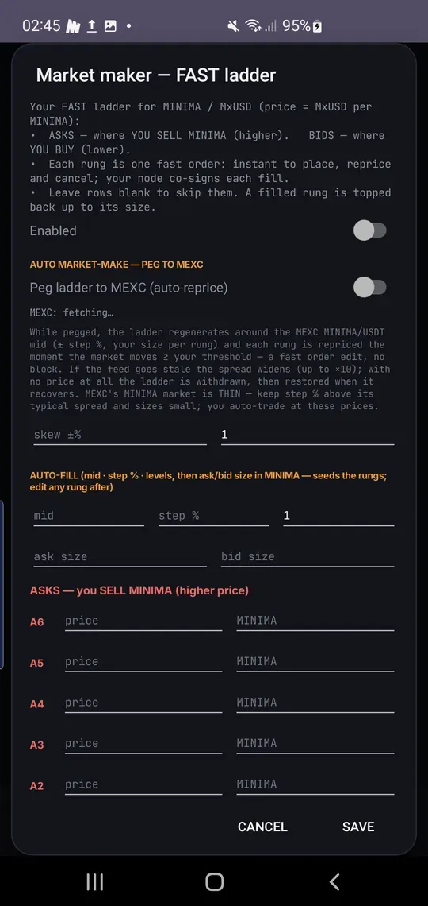
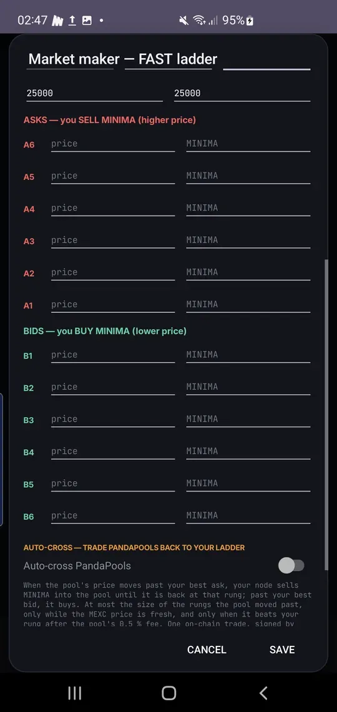
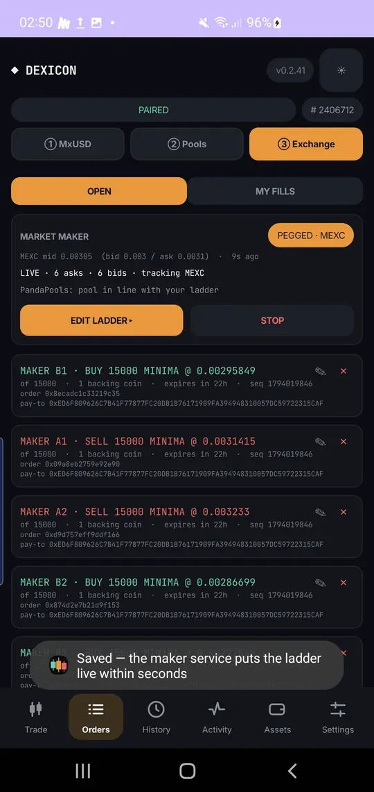
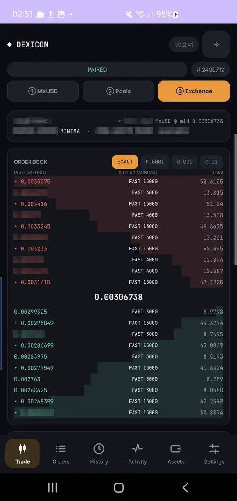

Make a market
Quote both sides of the book with a ladder of FAST orders. Your node co-signs fills by itself, even with the screen off.
You need: MINIMA and MxUSD, split into enough coins for every rungRuns: in the background, pegged to the market if you chooseFee: none
Open the market maker
③ Exchange › Orders. The market maker is off until you set it up.

Set the ladder
Turn it on and choose whether to peg it to the market price. Auto-fill takes a mid price, a step and a number of levels.

Check every rung
Asks above the mid, bids below. Edit any rung by hand. Leave a row blank to skip it.
Each rung needs its own coin. Use Split ×10 in Assets first.

It goes live
Save, and the maker service publishes the ladder within seconds. It re-signs your orders regularly so takers know you are online.

Your ladder on the book
Your rungs appear in the book as FAST orders. Filled rungs top themselves back up.
